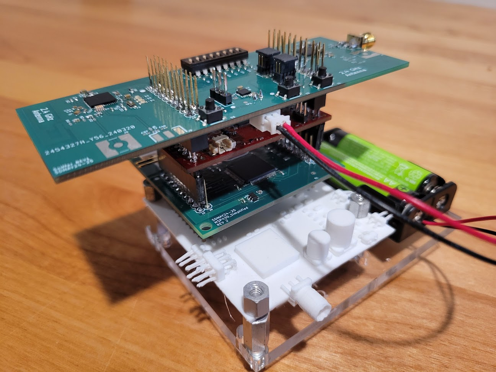

Batteryless sensor nodes are an emerging technology that enables low-cost, low-maintenance,
and long-lifetime embedded sensing. Rather than being wired into a continuous power supply or provisioned with a battery,
these sensor nodes survive solely on harvesting energy from ambient sources available in their environment, such as RF
signals, solar, vibrational, or thermal. As such, they are a challenge to design since these sources are often
highly variable and very low power. Our team was tasked with creating a testbed for researchers to use for
the battery-less nodes they are developing.

Final stackup of our testbed integrated with the device under test. The 3d printed board is a stand in
for a board that the researchers had not been fabricated yet.
Project Details
My team had the task of developing a testbed system for testing multiple batteryless sensor nodes
communicating with each other. The goal of our project was to develop both hardware and software to test these nodes. Additionally,
we had the task of making a cleaner batterless sensor node hardware or "BOB" node setup of multiple boards that make it a clean stack. Our system was
then connected to this BOB node and monitored aspects of it; wired data such as up time due to the Bob nodes not being on all the time. It
also monitored the wireless communication between the BOB nodes. All this data was sent from the monitor to a central computer
or host to organize the data and made it accessible for researchers. By the end of the year we had a system for ten of these BOB
and monitoring board pairs. We sucessfully did a 3 node setup in a network configuration demostrating scalability.
The design was scalable beyond this though, with the ability to be applied to a design with hundreds of
nodes.
Within this project I had two tasks. I was elected group leader, so I organized the work effort,
organized our timeline, managed communication with our client, managed our documentation, and handled submissions for class. Outside
of the leadership tasks, I was a member of our software team writing the embedded code that ran on the microcontrollers
to monitor the test and communicates.
Throughout the project, I grew in my embedded systems skills as I read through
preexisting code, read documentation, design system archtecture, and wrote code. With that work I developed skills with proposing
ideas and describing concerns I see. Additionally, I developed skills within leadership
specifically leading a small technical group, keeping meetings on topic, and creating agendas. I also gained skills with figuring
out a clients requirements and preferences when developing a solution for them.
Definitions
Requirements
Project Details
Our Design is described in our design document below. Our project had complications of multiple PCB
designs with RF components and a network for many codes aggregating data on multiple RF bands. We had a microcontroller on each
band for each node comunicating over SPI. We ran into many challenges as we developed the project.
Design Document
Final Poster
Final Presentation
Design Document
Final Poster
Final Presentation
Image Gallery
 This is a schematic of the test setup prior to our work. Our's expanding on this by
having one "Sniffer Node" CC1352 per each BOB node. Additionally, our setup had ten node pairs and could scale further.
This is a schematic of the test setup prior to our work. Our's expanding on this by
having one "Sniffer Node" CC1352 per each BOB node. Additionally, our setup had ten node pairs and could scale further.
 The previous test setup was wire heavy, so our setup put all boards in a
simple stack. Additionally, our Sniffer nodes were battery powered and communicated test information back to the
host wirelessly making the wires unnecessary and each node isolated.
The previous test setup was wire heavy, so our setup put all boards in a
simple stack. Additionally, our Sniffer nodes were battery powered and communicated test information back to the
host wirelessly making the wires unnecessary and each node isolated.